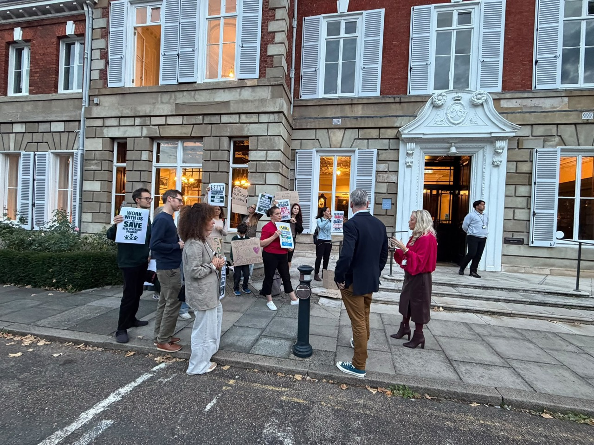

Campaign updates
News from the campaign, newest first. Last updated 18 October 2026.
Rally plan · 12 November
· York House, Twickenham. The campaign’s 14 October briefing sets out a plan to gather ahead of the Education and Children’s Services Committee meeting planned for 7pm.
Exact gathering point and access details are not included in that briefing. Check arrangements with the campaign before travelling.
Plan from the campaign’s 14 October parent briefing, checked 18 October 2026. The York House rally below took place on 6 October; it is a past event.
Published consultation response deadline
The council’s published deadline for responses to the pre-statutory consultation was 16 October 2026. Official response details.
Costed recovery plan submitted
Campaign volunteers have submitted a costed proposal to Achieving for Children as an alternative to closure. The campaign believes it could reduce the projected deficit while pupil numbers rebuild, and is asking the council for time and a fair chance to demonstrate this.
Kew Riverside parents in BBC News
BBC News reported parents’ concerns about the proposed closure of Kew Riverside Primary School and their efforts to keep it open. Read the BBC article: School closure would be devastating, parents say.
Featured on BBC television
We were featured live on BBC television at 6:30pm. BBC London evening news, 13 October — full programme on iPlayer (availability may be limited).
Petition opens
A petition to keep Kew Riverside Primary School open opened on Richmond Council’s website. It is for people who live, work or study in Richmond borough and closes on 13 January 2027. Sign the petition.
In the news
A local democracy reporting story on the proposed closure, including parents’ concerns raised at the 6 October council meeting, was published by MyLondon, Richmond Nub News, The Standard and southlondon.co.uk on 9 and 10 October.
Records received
After records requests that began on 23 September, Achieving for Children supplied the school’s final budget summary, approved by governors on 20 May 2026. On 8 October the budget ledger, assumptions and current monitoring were still outstanding.
York House rally
Campaign members gathered at York House and spoke with council members about keeping Kew Riverside Primary School open.

Campaign members speaking with council members outside York House, 6 October 2026. Questions at Full Council
Parents raised the proposed closure through public questions for the Full Council meeting at York House, Twickenham. Council meeting papers.
Parent Voices on YouTube
The parent-run Kew Parent Voices YouTube channel published its first parent testimonials for families choosing a school. Watch Parent Voices.
Community letters
The first community letter was published on this website with its writer’s permission; more have followed. Read the letters.
Want to help? Get involved.